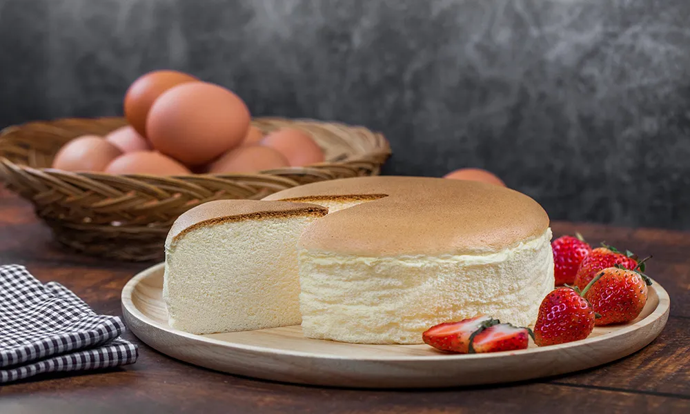

Japanese Cheesecake

Description
Renowned for its fluffy, cotton-like texture, and a cross between souffle and the infamous New York
Cheesecake, this Japanese Cheesecake has continued to be a crowd-pleasing dessert since the 60s.
Egg Whites are the secret behind its jiggly-fluffy texture and it is baked in a bain-marie,
or water bath, for gentle and even heating in the oven.
Ingredients:
- 100g butter
- 100g cream cheese
- 130ml (1/2 cup) of milk
- 8 egg yolks
- 60g flour
- 60g cornstarch
- 13 large egg whites
- 130g sugar
Directions:
- Mix the butter, cream cheese, and milk into a pot and cook it over low heat. Continue to
stir until the mixture is smooth and thick.
- Whisk the egg yolks together in a bowl and gradually whisk in the mixture.
- Sift the flour and cornstarch over the batter and stir until smooth and shiny.
- In a separate bowl, whisk the egg whites together until soft peaks form. Then, add sugar
to form a meringue with somewhat stiff peaks. (Gradually pour sugar into 3 parts to ensure
that all of the sugar is dissolved into the meringue.
- Gradually fold the meringue into the batter, quarter parts at a time. Be gentle as the
fluffiness of the cheesecake depends on the amount of air inside the mixture, so you
don't want to use too much pressure.
- Transfer the mixture into a round greased baking pan lined with parchment paper.
Tap the pan against the table to remove any air bubbles inside.
- Place the baking pan over a wider baking dish and fill the outer
tray with hot water until it's about 2cm high.
- Bake the cheesecake in a preheated oven for 25 minutes at 320F (160c) then
reduce heat to 284F (140c) and bake it for another 55 minutes.
- Once the cheesecake is baked, carefully invert the cake onto your hand
and remove it from the baking pan. While you can invert it onto a plate,
this will cause the cake to deflate even more.
- Serve the cake with a layer of powdered sugar and freshly sliced fruits of your choice.